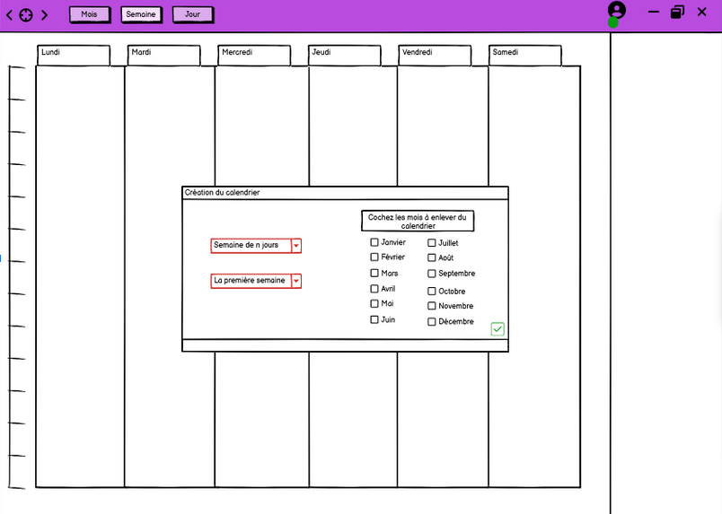
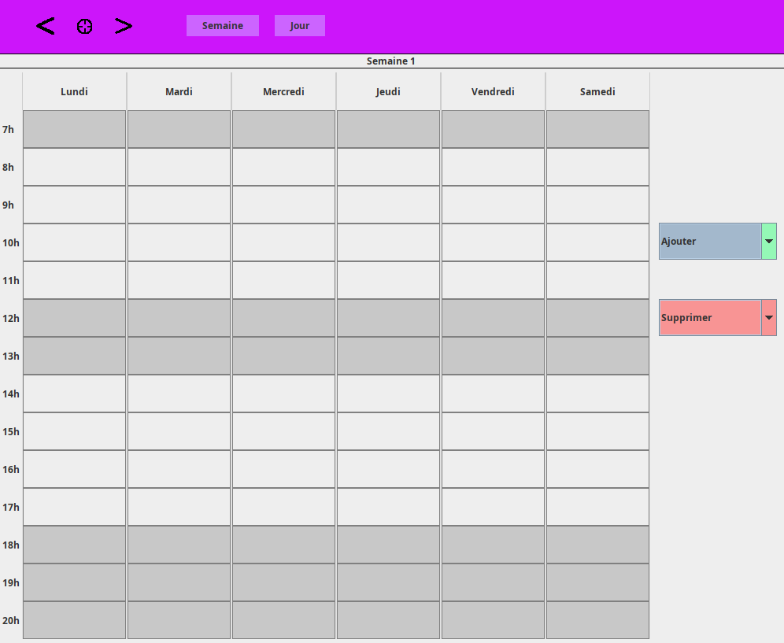

Réaliser un développement d'applications
Au cours de cette formation, j'ai eu l'opportunité d'explorer les différentes facettes du développement logiciel, de la conception initiale à la mise en production. Les modules de cours m'ont permis de me familiariser avec les langages de programmation, les outils de développement, les méthodologies de gestion de projet, ainsi que les bonnes pratiques en matière de code et de collaboration en équipe.
Ressources
Durant l'année, j'ai eu l'opportunité de mobiliser une multitude de ressources issues des enseignements reçus. Les cours théoriques et pratiques ont été une base solide pour l'apprentissage des langages de programmation pour le développement de logiciels tels que le C, le Java, le SQL et le Python. Les travaux pratiques (TP) ont également joué un rôle crucial en me permettant de mettre en application les concepts étudiés, renforçant ainsi ma compréhension et ma maîtrise de ces langages.
Ces ressources pédagogiques ont été complétées par l'accès à des plateformes en ligne, des bibliothèques numériques et des environnements de développement intégrés (IDE), ce qui a considérablement enrichi mon expérience d'apprentissage. Les échanges avec les enseignants et les travaux de groupe ont permis de clarifier certains points complexes et de découvrir des approches différentes pour résoudre les problèmes de programmation.
Cependant, pour approfondir mes connaissances et pallier certaines lacunes, j'ai dû rechercher des ressources supplémentaires. J'ai consulté des tutoriels en ligne, des forums de développeurs, ainsi que des livres spécialisés disponible dans les bibliothèques universitaires. Ces ressources complémentaires ont été particulièrement utiles pour comprendre des aspects plus avancés des langages étudiés et pour explorer des technologies connexes non couvertes en cours.
Pour la réalisation de la Situation d'Apprentissage et d'Évaluation (SAE) liée à la compétence de développement d'application, j'ai mobilisé plusieurs types de ressources. Les notes de cours et les supports de TD/TP ont été des références essentielles. De plus, j'ai utilisé des documentations officielles des langages de programmation concernés, des exemples de code disponibles sur des plateformes comme GitLab, ainsi que des outils de gestion de version tels que Git pour la collaboration et la gestion de projet.
Implication
Lors de la SAÉ liée à la compétence « développement d’application » je me suis porté volontaire pour réaliser le maquettage de l’UI de notre application ayant pour objectif de d’afficher un emploi du temps avec plusieurs options visant à modifier l’emploi du temps comme ajouté un jour de congé, des vacances, annulé des cours, des rendez-vous ect.


Pour la réalisation du code de l’application, mes tâches principales étaient de travailler sur l’interface principal de l’application et l’affichage des jours dans l’emploi du temps. J’ai aussi pris la responsabilité de corriger les bouts de codes envoyé sur gitlab par les autres membres de l’équipe.
Afin de discuter de nos différentes idées à apporter pour le développement de l’application nous avons mis en place un groupe de discussion uniquement dédié au projet ou nous nous retrouvons chaque semaine en réunions pour apporter nos feedbacks et des solutions aux différents problèmes rencontrées. Gitlab est un excellant outils pour l’organisation des bouts de codes pour le programme, car git permet de transférer des bouts de codes dans un projet qui sont ensuite modifiable par l’équipe.
Apprentissages
Durant la SAÉ, j'ai constaté une nette évolution de ma maîtrise des apprentissages critiques. Au début, certaines notions de programmation et de gestion de projet me semblaient abstraites et complexes. Cependant, à mesure que le projet avançait, j'ai pu appliquer concrètement ces concepts, ce qui a grandement amélioré ma compréhension et ma compétence. Par exemple, ma maîtrise des langages de programmation comme le Java et le C s'est approfondie grâce à leur utilisation régulière dans le développement de l'application. De plus, j'ai acquis une meilleure compréhension des bases de données SQL et de leur intégration dans une application. Les principes de gestion de projet, tels que l'organisation des tâches et la collaboration en équipe, sont également devenus plus intuitifs et efficaces.
Si c’était à refaire, j'apporterais quelques changements. Tout d'abord, je mettrais en place un plan de projet plus détaillé dès le début, incluant des étapes claires et des jalons intermédiaires pour mieux suivre notre progression. Ensuite, je favoriserais une utilisation plus systématique des outils de gestion de version et de suivi des tâches, comme Git et Trello, pour améliorer la coordination et la transparence au sein de l'équipe
Mes points faibles incluent une tendance à la dispersion lorsque je travaille sur plusieurs tâches simultanément et une certaine difficulté à déléguer efficacement. Pour combler ces faiblesses, je vais adopter des techniques de gestion du temps, telles que la méthode Pomodoro, pour améliorer ma concentration et ma productivité.
- Améliorer ma gestion du temps et de la priorisation : Je vais utiliser la méthode Pomodoro pour maintenir ma concentration et organiser mes tâches par ordre d'importance.
- Renforcer mes compétences en résolution de problèmes : Je participerai à des compétitions de programmation en ligne et résoudrai des exercices algorithmiques pour affiner mes capacités de résolution de problèmes.
- Approfondir mes connaissances dans les langages de programmation : Je suivrai des tutoriels avancés et travaillerai sur des projets personnels pour explorer des fonctionnalités avancées de Java et Python.
Pour atteindre ces objectifs, je vais établir un planning hebdomadaire détaillé, en intégrant des périodes dédiées à l'étude et à la pratique. Je maintiendrai une discipline rigoureuse en respectant ce planning et en ajustant mes méthodes de travail en fonction des défis rencontrés.